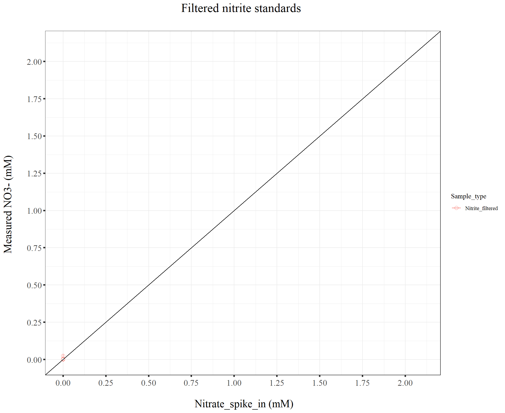
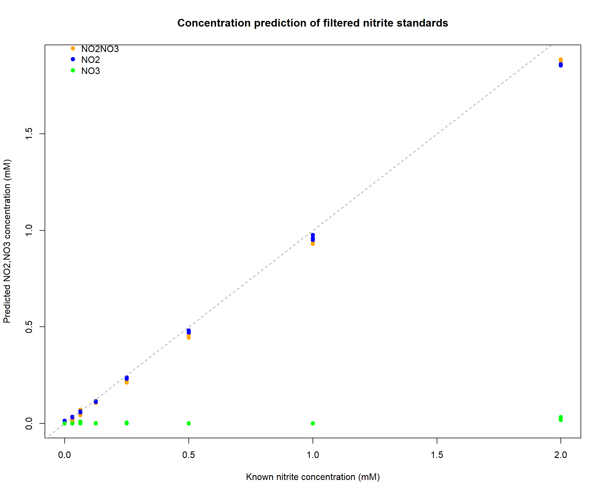
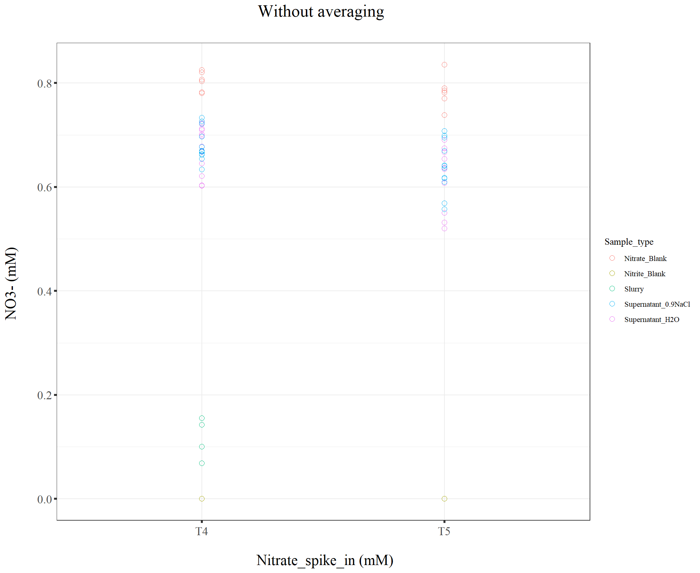

211127_Griess_time_series_slurry_vs_liquid_culture
KiseokUchicago
2021-11-28
Last updated: 2021-11-29
Checks: 7 0
Knit directory: Denit_visualization_R/
This reproducible R Markdown analysis was created with workflowr (version 1.6.2). The Checks tab describes the reproducibility checks that were applied when the results were created. The Past versions tab lists the development history.
Great! Since the R Markdown file has been committed to the Git repository, you know the exact version of the code that produced these results.
Great job! The global environment was empty. Objects defined in the global environment can affect the analysis in your R Markdown file in unknown ways. For reproduciblity it’s best to always run the code in an empty environment.
The command set.seed(20210924) was run prior to running the code in the R Markdown file. Setting a seed ensures that any results that rely on randomness, e.g. subsampling or permutations, are reproducible.
Great job! Recording the operating system, R version, and package versions is critical for reproducibility.
Nice! There were no cached chunks for this analysis, so you can be confident that you successfully produced the results during this run.
Great job! Using relative paths to the files within your workflowr project makes it easier to run your code on other machines.
Great! You are using Git for version control. Tracking code development and connecting the code version to the results is critical for reproducibility.
The results in this page were generated with repository version 145a98c. See the Past versions tab to see a history of the changes made to the R Markdown and HTML files.
Note that you need to be careful to ensure that all relevant files for the analysis have been committed to Git prior to generating the results (you can use wflow_publish or wflow_git_commit). workflowr only checks the R Markdown file, but you know if there are other scripts or data files that it depends on. Below is the status of the Git repository when the results were generated:
Ignored files:
Ignored: .Rhistory
Ignored: .Rproj.user/
Ignored: Figure_211014_external_lab/
Untracked files:
Untracked: 210928_pH.pdf
Untracked: 211014_TN.pdf
Untracked: 211014_drying_oven_TOC.pdf
Untracked: 211014_toc_lab.pdf
Untracked: 211020_df_full_innate.xlsx
Untracked: Figure_210911_TOC/
Untracked: Figure_210924/
Untracked: Figure_210927_TOC/
Untracked: Figure_210929/
Untracked: Figure_211006/
Untracked: Figure_211007/
Untracked: Figure_211008/
Untracked: Figure_211013/
Untracked: data/210911_TOC_sample_plate1.xlsx
Untracked: data/210922_Griess_sample_plate1-investigating.xlsx
Untracked: data/210922_Griess_sample_plate1.xlsx
Untracked: data/210927_TOC_sample_plate1_100ul.xlsx
Untracked: data/210927_TOC_sample_plate1_10ul.xlsx
Untracked: data/210928_Griess_sample_plate1.xlsx
Untracked: data/211005_Griess_sample_plate1.xlsx
Untracked: data/211007_Griess_blank_plate1.xlsx
Untracked: data/211007_Griess_blank_plate2.xlsx
Untracked: data/211008_Griess_blank_plate0.xlsx
Untracked: data/211008_Griess_blank_plate1.xlsx
Untracked: data/211017_Griess_plate0.xlsx
Untracked: data/211017_Griess_plate1.xlsx
Untracked: data/211017_Griess_plate2.xlsx
Untracked: data/211017_Griess_plate3.xlsx
Untracked: data/211017_Griess_plate4.xlsx
Untracked: data/211017_Griess_plate5.xlsx
Untracked: data/211017_Griess_plate6.xlsx
Untracked: data/211017_Griess_plate7.xlsx
Untracked: data/211017_Griess_plate8.xlsx
Untracked: data/211019_Griess_plate1.xlsx
Untracked: data/211020_Griess_plate0.xlsx
Untracked: data/211020_Griess_plate1.xlsx
Untracked: data/211020_df_full_innate.xlsx
Untracked: data/211025_Griess_no3_fit_plate0.xlsx
Untracked: data/211025_Griess_no3_fit_plate1.xlsx
Untracked: data/211025_Griess_plate0.xlsx
Untracked: data/211025_Griess_plate1.xlsx
Untracked: data/211028_Griess_plate1.xlsx
Untracked: data/211028_Griess_plate1_no3_fit.xlsx
Untracked: data/211028_Griess_plate2.xlsx
Untracked: data/211028_Griess_plate2_no3_fit.xlsx
Untracked: data/211028_Griess_plate3.xlsx
Untracked: data/211028_Griess_plate3_no3_fit.xlsx
Untracked: data/211028_Griess_plate4.xlsx
Untracked: data/211028_Griess_plate4_no3_fit.xlsx
Untracked: data/211028_time_table.xlsx
Untracked: data/211127_Griess_SUP1.xlsx
Untracked: data/211127_Griess_SUP11.xlsx
Untracked: data/211127_Griess_SUP3.xlsx
Untracked: data/211127_Griess_SUP5.xlsx
Untracked: data/211127_Griess_SUP7.xlsx
Untracked: data/211127_Griess_SUP9.xlsx
Untracked: data/211127_Griess_plate0.xlsx
Untracked: data/211127_time_table.xlsx
Untracked: data/TOC_TN_measurement_2_labs_211014.xlsx
Untracked: data/dry_weight_curve(9.5.21).xlsx
Untracked: data/pH_data(11.17.21)-Midway_etc.xlsx
Untracked: data/pH_data(9.14.21).xlsx
Untracked: data/pH_data(9.28.21).xlsx
Untracked: data/~$211127_time_table.xlsx
Untracked: df_NO2NO3.xlsx
Note that any generated files, e.g. HTML, png, CSS, etc., are not included in this status report because it is ok for generated content to have uncommitted changes.
These are the previous versions of the repository in which changes were made to the R Markdown (analysis/211127_Griess_time_series_slurry_vs_liquid_culture.Rmd) and HTML (docs/211127_Griess_time_series_slurry_vs_liquid_culture.html) files. If you’ve configured a remote Git repository (see ?wflow_git_remote), click on the hyperlinks in the table below to view the files as they were in that past version.
| File | Version | Author | Date | Message |
|---|---|---|---|---|
| Rmd | 145a98c | KiseokUchicago | 2021-11-29 | wflow_publish(“analysis/211127_Griess_time_series_slurry_vs_liquid_culture.Rmd”) |
Time series analysis - Slurry vs Liquid culture (Griess assay)
Researcher: Kiseok Lee
Experiment Date: 11/13/21 - 11/26/21 (2 weeks)
Analysis Date: 11/27/21 Lab: Seppe Kuehn
# libraries
library(dplyr)
library(ggplot2)
library(RColorBrewer)
library(vegan)
library(tidyverse)
library(magrittr)
library(readxl)
library(reshape2)
library(gtools)
library(devtools)
library(openxlsx)
library(ape)
library(stringr)
library(tidyr)
library(ggrepel)
library(ggpubr)
## theme for ggplot
mytheme <- theme_bw() +
theme(text = element_text(family="serif")) +
theme(plot.title = element_text(size = 19,hjust = 0.5, family="serif")) +
theme(axis.title.x = element_text(size = 17,hjust = 0.5, family="serif")) +
theme(axis.title.y = element_text(size = 17,hjust = 0.5, family="serif")) +
theme(axis.text.x = element_text(hjust = 0.5, vjust=0.3,size=13, family="serif"))+
theme(axis.text.y = element_text(size=10, family="serif"))+
theme(panel.grid.major = element_blank()) +
theme(panel.grid.minor = element_blank(),panel.background=element_blank(),panel.border=element_blank(),plot.background=element_blank()) +
theme(axis.ticks = element_line(size = 1.1))
mytheme_2d <- theme_bw() +
theme(text = element_text(family="serif")) +
theme(plot.title = element_text(size = 19,hjust = 0.5, family="serif")) +
theme(axis.title.x = element_text(size = 17,hjust = 0.5, family="serif")) +
theme(axis.title.y = element_text(size = 17,hjust = 0.5, family="serif")) +
theme(axis.text.x = element_text(hjust = 0.5, vjust=0.3,size=13, family="serif"))+
theme(axis.text.y = element_text(size=13, family="serif"))+
# theme(panel.grid.major = element_blank()) +
# theme(panel.grid.minor = element_blank(),panel.background=element_blank(),plot.background=element_blank()) +
theme(axis.ticks = element_line(size = 1.1))
# color collection
my_color_collection <- c(
"#CBD588", "#5F7FC7", "orange", "#AD6F3B", "#673770",
"#D14285", "#652926", "#C84248", "#8569D5", "#5E738F",
"#D1A33D", "#8A7C64", "#599861","#616163", "#FFCDB2",
"#6D9F71", "#242F40",
"#CCA43B", "#F92A82", "#ED7B84", "#7EB77F",
"#DEC4A1", "#E5D1D0", '#0E8482', '#C9DAEA', '#337357',
'#95C623', '#E55812', '#04471C', '#F2D7EE', '#D3BCC0',
'#A5668B', '#69306D', '#0E103D', '#1A535C', '#4ECDC4',
'#F7FFF7', '#FF6B6B', '#FFE66D', '#6699CC', '#FFF275',
'#FF8C42', '#FF3C38', '#A23E48', '#000000', '#CF5C36',
'#EEE5E9', '#7C7C7C', '#EFC88B', '#2E5266', '#6E8898',
'#9FB1BC', '#D3D0CB', '#E2C044', '#5BC0EB', '#FDE74C',
'#9BC53D', '#E55934', '#FA7921', "#CD9BCD", "#508578", "#DA5724")
# for git push, use this instead of using wflow_git_push()
# git push -u origin master (in the Git app / in the working directory)1. Import data table from python code
We are going to use the vcl3 treated standard curve that is fitted with pure nitrate standards
# import file
df_p0 <- openxlsx::read.xlsx("data/211127_Griess_plate0.xlsx")
df_p1 <- openxlsx::read.xlsx("data/211127_Griess_SUP1.xlsx")
df_p2 <- openxlsx::read.xlsx("data/211127_Griess_SUP3.xlsx")
df_p3 <- openxlsx::read.xlsx("data/211127_Griess_SUP5.xlsx")
df_p4 <- openxlsx::read.xlsx("data/211127_Griess_SUP7.xlsx")
df_p5 <- openxlsx::read.xlsx("data/211127_Griess_SUP9.xlsx")
df_p6 <- openxlsx::read.xlsx("data/211127_Griess_SUP11.xlsx")
head(df_p1) Well Sample Extraction_method Extraction_ul Nitrite_input
1 A01 Slurry_pH4_T0 0.5_1_1.5 70 0
2 A02 Slurry_pH6_T0 0.5_1_1.5 70 0
3 A03 Slurry_pH4_T0 0.5_1_1.5 70 0
4 A04 Slurry_pH6_T0 0.5_1_1.5 70 0
5 A05 Slurry_pH4_T0 0.5_1_1.5 70 0
6 A06 Slurry_pH6_T0 0.5_1_1.5 70 0
Nitrate_input Category Sample_type pH Time_point Plate
1 2 Slurry_vs_Liquid_culture Slurry 4 T0 SUP1
2 2 Slurry_vs_Liquid_culture Slurry 6 T0 SUP1
3 2 Slurry_vs_Liquid_culture Slurry 4 T0 SUP1
4 2 Slurry_vs_Liquid_culture Slurry 6 T0 SUP1
5 2 Slurry_vs_Liquid_culture Slurry 4 T0 SUP1
6 2 Slurry_vs_Liquid_culture Slurry 6 T0 SUP1
NO2_OD540 NO2NO3_OD540 NO2_mM NO2NO3_mM NO3_mM
1 0.00535 0.81150 0.01247913 0.7448899 0.7324108
2 0.00465 0.78825 0.01214458 0.7212598 0.7091152
3 0.00330 0.79080 0.01149942 0.7238462 0.7123468
4 0.00395 0.79075 0.01181004 0.7237955 0.7119854
5 0.00370 0.76815 0.01169057 0.7009176 0.6892270
6 0.00345 0.79885 0.01157110 0.7320197 0.7204486colnames(df_p1) [1] "Well" "Sample" "Extraction_method"
[4] "Extraction_ul" "Nitrite_input" "Nitrate_input"
[7] "Category" "Sample_type" "pH"
[10] "Time_point" "Plate" "NO2_OD540"
[13] "NO2NO3_OD540" "NO2_mM" "NO2NO3_mM"
[16] "NO3_mM" dim(df_p1)[1] 96 16head(df_p2) Well Sample Extraction_method Extraction_ul Nitrite_input
1 A01 Slurry_pH4_T2 0.5_1_1.5 70 0
2 A02 Slurry_pH6_T2 0.5_1_1.5 70 0
3 A03 Slurry_pH4_T2 0.5_1_1.5 70 0
4 A04 Slurry_pH6_T2 0.5_1_1.5 70 0
5 A05 Slurry_pH4_T2 0.5_1_1.5 70 0
6 A06 Slurry_pH6_T2 0.5_1_1.5 70 0
Nitrate_input Category Sample_type pH Time_point Plate
1 2 Slurry_vs_Liquid_culture Slurry 4 T2 SUP3
2 2 Slurry_vs_Liquid_culture Slurry 6 T2 SUP3
3 2 Slurry_vs_Liquid_culture Slurry 4 T2 SUP3
4 2 Slurry_vs_Liquid_culture Slurry 6 T2 SUP3
5 2 Slurry_vs_Liquid_culture Slurry 4 T2 SUP3
6 2 Slurry_vs_Liquid_culture Slurry 6 T2 SUP3
NO2_OD540 NO2NO3_OD540 NO2_mM NO2NO3_mM NO3_mM
1 0.00715 NA 0.01333950 NA NA
2 0.00535 0.13845 0.01247913 0.09958973 0.08711060
3 0.00800 0.38460 0.01374582 0.32693184 0.31318603
4 0.00870 0.48560 0.01408046 0.42293987 0.40885941
5 0.00815 0.41475 0.01381753 0.35541788 0.34160036
6 0.00405 0.07910 0.01185783 0.04609345 0.03423561colnames(df_p2) [1] "Well" "Sample" "Extraction_method"
[4] "Extraction_ul" "Nitrite_input" "Nitrate_input"
[7] "Category" "Sample_type" "pH"
[10] "Time_point" "Plate" "NO2_OD540"
[13] "NO2NO3_OD540" "NO2_mM" "NO2NO3_mM"
[16] "NO3_mM" dim(df_p2)[1] 96 16head(df_p3) Well Sample Extraction_method Extraction_ul Nitrite_input
1 A01 Slurry_pH4_T4 0.5_1_1.5 70 0
2 A02 Slurry_pH6_T4 0.5_1_1.5 70 0
3 A03 Slurry_pH4_T4 0.5_1_1.5 70 0
4 A04 Slurry_pH6_T4 0.5_1_1.5 70 0
5 A05 Slurry_pH4_T4 0.5_1_1.5 70 0
6 A06 Slurry_pH6_T4 0.5_1_1.5 70 0
Nitrate_input Category Sample_type pH Time_point Plate
1 2 Slurry_vs_Liquid_culture Slurry 4 T4 SUP5
2 2 Slurry_vs_Liquid_culture Slurry 6 T4 SUP5
3 2 Slurry_vs_Liquid_culture Slurry 4 T4 SUP5
4 2 Slurry_vs_Liquid_culture Slurry 6 T4 SUP5
5 2 Slurry_vs_Liquid_culture Slurry 4 T4 SUP5
6 2 Slurry_vs_Liquid_culture Slurry 6 T4 SUP5
NO2_OD540 NO2NO3_OD540 NO2_mM NO2NO3_mM NO3_mM
1 0.00070 0.1964 0.010257069 0.15230377 0.14204670
2 0.00000 0.0000 0.009922632 0.00000000 0.00000000
3 0.00000 0.0000 0.009922632 0.00000000 0.00000000
4 0.00020 0.1152 0.010018183 0.07857441 0.06855623
5 0.00085 0.0000 0.010328736 0.00000000 0.00000000
6 0.00105 0.0000 0.010424294 0.00000000 0.00000000colnames(df_p3) [1] "Well" "Sample" "Extraction_method"
[4] "Extraction_ul" "Nitrite_input" "Nitrate_input"
[7] "Category" "Sample_type" "pH"
[10] "Time_point" "Plate" "NO2_OD540"
[13] "NO2NO3_OD540" "NO2_mM" "NO2NO3_mM"
[16] "NO3_mM" dim(df_p3)[1] 96 16head(df_p4) Well Sample Extraction_method Extraction_ul Nitrite_input
1 A01 Slurry_pH4_T6 0.5_1_1.5 70 0
2 A02 Slurry_pH6_T6 0.5_1_1.5 70 0
3 A03 Slurry_pH4_T6 0.5_1_1.5 70 0
4 A04 Slurry_pH6_T6 0.5_1_1.5 70 0
5 A05 Slurry_pH4_T6 0.5_1_1.5 70 0
6 A06 Slurry_pH6_T6 0.5_1_1.5 70 0
Nitrate_input Category Sample_type pH Time_point Plate
1 2 Slurry_vs_Liquid_culture Slurry 4 T6 SUP7
2 2 Slurry_vs_Liquid_culture Slurry 6 T6 SUP7
3 2 Slurry_vs_Liquid_culture Slurry 4 T6 SUP7
4 2 Slurry_vs_Liquid_culture Slurry 6 T6 SUP7
5 2 Slurry_vs_Liquid_culture Slurry 4 T6 SUP7
6 2 Slurry_vs_Liquid_culture Slurry 6 T6 SUP7
NO2_OD540 NO2NO3_OD540 NO2_mM NO2NO3_mM NO3_mM
1 0.00155 0 0.01066319 0 0
2 0.00195 0 0.01085432 0 0
3 0.00130 0 0.01054374 0 0
4 0.00185 0 0.01080654 0 0
5 0.00145 0 0.01061541 0 0
6 0.00260 0 0.01116492 0 0colnames(df_p4) [1] "Well" "Sample" "Extraction_method"
[4] "Extraction_ul" "Nitrite_input" "Nitrate_input"
[7] "Category" "Sample_type" "pH"
[10] "Time_point" "Plate" "NO2_OD540"
[13] "NO2NO3_OD540" "NO2_mM" "NO2NO3_mM"
[16] "NO3_mM" dim(df_p4)[1] 96 16head(df_p5) Well Sample Extraction_method Extraction_ul Nitrite_input
1 A01 Slurry_pH4_T8 0.5_1_1.5 70 0
2 A02 Slurry_pH6_T8 0.5_1_1.5 70 0
3 A03 Slurry_pH4_T8 0.5_1_1.5 70 0
4 A04 Slurry_pH6_T8 0.5_1_1.5 70 0
5 A05 Slurry_pH4_T8 0.5_1_1.5 70 0
6 A06 Slurry_pH6_T8 0.5_1_1.5 70 0
Nitrate_input Category Sample_type pH Time_point Plate
1 2 Slurry_vs_Liquid_culture Slurry 4 T8 SUP9
2 2 Slurry_vs_Liquid_culture Slurry 6 T8 SUP9
3 2 Slurry_vs_Liquid_culture Slurry 4 T8 SUP9
4 2 Slurry_vs_Liquid_culture Slurry 6 T8 SUP9
5 2 Slurry_vs_Liquid_culture Slurry 4 T8 SUP9
6 2 Slurry_vs_Liquid_culture Slurry 6 T8 SUP9
NO2_OD540 NO2NO3_OD540 NO2_mM NO2NO3_mM NO3_mM
1 0.00630 0 0.01293320 0 0
2 0.00730 0 0.01341120 0 0
3 0.00475 0 0.01219237 0 0
4 0.00545 0 0.01252693 0 0
5 0.00885 0 0.01415217 0 0
6 0.01135 0 0.01534746 0 0colnames(df_p5) [1] "Well" "Sample" "Extraction_method"
[4] "Extraction_ul" "Nitrite_input" "Nitrate_input"
[7] "Category" "Sample_type" "pH"
[10] "Time_point" "Plate" "NO2_OD540"
[13] "NO2NO3_OD540" "NO2_mM" "NO2NO3_mM"
[16] "NO3_mM" dim(df_p5)[1] 96 16head(df_p6) Well Sample Extraction_method Extraction_ul Nitrite_input
1 A01 Slurry_pH4_T10 0.5_1_1.5 70 0
2 A02 Slurry_pH6_T10 0.5_1_1.5 70 0
3 A03 Slurry_pH4_T10 0.5_1_1.5 70 0
4 A04 Slurry_pH6_T10 0.5_1_1.5 70 0
5 A05 Slurry_pH4_T10 0.5_1_1.5 70 0
6 A06 Slurry_pH6_T10 0.5_1_1.5 70 0
Nitrate_input Category Sample_type pH Time_point Plate
1 2 Slurry_vs_Liquid_culture Slurry 4 T10 SUP11
2 2 Slurry_vs_Liquid_culture Slurry 6 T10 SUP11
3 2 Slurry_vs_Liquid_culture Slurry 4 T10 SUP11
4 2 Slurry_vs_Liquid_culture Slurry 6 T10 SUP11
5 2 Slurry_vs_Liquid_culture Slurry 4 T10 SUP11
6 2 Slurry_vs_Liquid_culture Slurry 6 T10 SUP11
NO2_OD540 NO2NO3_OD540 NO2_mM NO2NO3_mM NO3_mM
1 0.00485 0 0.01224016 0 0
2 0.00475 0 0.01219237 0 0
3 0.00305 0 0.01137995 0 0
4 0.00505 0 0.01233575 0 0
5 0.00575 0 0.01267032 0 0
6 0.00615 0 0.01286150 0 0colnames(df_p6) [1] "Well" "Sample" "Extraction_method"
[4] "Extraction_ul" "Nitrite_input" "Nitrate_input"
[7] "Category" "Sample_type" "pH"
[10] "Time_point" "Plate" "NO2_OD540"
[13] "NO2NO3_OD540" "NO2_mM" "NO2NO3_mM"
[16] "NO3_mM" dim(df_p6)[1] 48 16# remove wells
df_p1 %<>% filter(!(Well %in% c("F01","F02","F03","F04","F05","F06","F07","F08","F09","F10","F11","F12"))) # put griess reagents two times (190ul + 190ul)
dim(df_p1)[1] 84 16# df_p2 %<>% filter(!(Well %in% c("A10","A11"))) # filter contamination
# dim(df_p2)
# df_p3 %<>% filter(!(Well %in% c("D05","F05"))) # blanks contaminated with soil
# dim(df_p3)
# df_p4 %<>% filter(!(Well %in% c("D01","F01"))) # blanks contaminated with soil
# dim(df_p4)
# bind two dataframe
df_p <- rbind(df_p1, df_p2, df_p3, df_p4, df_p5, df_p6)
dim(df_p)[1] 516 16# remove NA
dim(df_p)[1] 516 16df_p <- na.omit(df_p)
dim(df_p)[1] 514 16# multiply dilution factor which is 5/2
df_p %<>% select(-NO2_OD540, -NO2NO3_OD540)
df_p %<>% mutate(NO2_mM = NO2_mM * (5/2), NO2NO3_mM = NO2NO3_mM * (5/2), NO3_mM = NO3_mM * (5/2))
# Get the metadata for time point and left join
Time_table <- openxlsx::read.xlsx("data/211127_time_table.xlsx")
Time_table %<>% select(-Date)
dim(df_p)[1] 514 14df_p <- df_p %>% left_join(Time_table, by=("Time_point"="Time_point"))
dim(df_p)[1] 514 17colnames(df_p) [1] "Well" "Sample" "Extraction_method"
[4] "Extraction_ul" "Nitrite_input" "Nitrate_input"
[7] "Category" "Sample_type" "pH"
[10] "Time_point" "Plate" "NO2_mM"
[13] "NO2NO3_mM" "NO3_mM" "Time_minutes"
[16] "Time_hours" "Time_days" # time_point order
df_p$Time_point <- factor(df_p$Time_point, levels = paste0("T",0:10))2. Get average and standard deviation & Moisture correction & Blank correction
# plot to see
ggplot(df_p, aes(x=Time_point, y=NO3_mM, color=Sample_type, group=Sample_type)) +
geom_point(size=2.5, shape=21) +
# geom_line(size=1)+
scale_fill_brewer(palette='Set2') +
ylab("NO3- (mM) \n") +
xlab("\n Nitrate_spike_in (mM)") +
# scale_y_continuous(breaks = seq(0,0.3,0.05), limits=c(0, 0.3))+
ggtitle("Without averaging \n") +
mytheme_2d
# plot to see
ggplot(df_p1, aes(x=Time_point, y=NO3_mM, color=Sample_type, group=Sample_type)) +
geom_point(size=2.5, shape=21) +
# geom_line(size=1)+
scale_fill_brewer(palette='Set2') +
ylab("NO3- (mM) \n") +
xlab("\n Nitrate_spike_in (mM)") +
# scale_y_continuous(breaks = seq(0,0.3,0.05), limits=c(0, 0.3))+
ggtitle("Without averaging \n") +
mytheme_2d# plot to see
ggplot(df_p2, aes(x=Time_point, y=NO3_mM, color=Sample_type, group=Sample_type)) +
geom_point(size=2.5, shape=21) +
# geom_line(size=1)+
scale_fill_brewer(palette='Set2') +
ylab("NO3- (mM) \n") +
xlab("\n Nitrate_spike_in (mM)") +
# scale_y_continuous(breaks = seq(0,0.3,0.05), limits=c(0, 0.3))+
ggtitle("Without averaging \n") +
mytheme_2d# plot to see
ggplot(df_p3, aes(x=Time_point, y=NO3_mM, color=Sample_type, group=Sample_type)) +
geom_point(size=2.5, shape=21) +
# geom_line(size=1)+
scale_fill_brewer(palette='Set2') +
ylab("NO3- (mM) \n") +
xlab("\n Nitrate_spike_in (mM)") +
# scale_y_continuous(breaks = seq(0,0.3,0.05), limits=c(0, 0.3))+
ggtitle("Without averaging \n") +
mytheme_2d# plot to see
ggplot(df_p4, aes(x=Time_point, y=NO3_mM, color=Sample_type, group=Sample_type)) +
geom_point(size=2.5, shape=21) +
# geom_line(size=1)+
scale_fill_brewer(palette='Set2') +
ylab("NO3- (mM) \n") +
xlab("\n Nitrate_spike_in (mM)") +
# scale_y_continuous(breaks = seq(0,0.3,0.05), limits=c(0, 0.3))+
ggtitle("Without averaging \n") +
mytheme_2d
# plot to see
ggplot(df_p5, aes(x=Time_point, y=NO3_mM, color=Sample_type, group=Sample_type)) +
geom_point(size=2.5, shape=21) +
# geom_line(size=1)+
scale_fill_brewer(palette='Set2') +
ylab("NO3- (mM) \n") +
xlab("\n Nitrate_spike_in (mM)") +
# scale_y_continuous(breaks = seq(0,0.3,0.05), limits=c(0, 0.3))+
ggtitle("Without averaging \n") +
mytheme_2d
# plot to see
ggplot(df_p6, aes(x=Time_point, y=NO3_mM, color=Sample_type, group=Sample_type)) +
geom_point(size=2.5, shape=21) +
# geom_line(size=1)+
scale_fill_brewer(palette='Set2') +
ylab("NO3- (mM) \n") +
xlab("\n Nitrate_spike_in (mM)") +
# scale_y_continuous(breaks = seq(0,0.3,0.05), limits=c(0, 0.3))+
ggtitle("Without averaging \n") +
mytheme_2d# average technical replicate
colnames(df_p) [1] "Well" "Sample" "Extraction_method"
[4] "Extraction_ul" "Nitrite_input" "Nitrate_input"
[7] "Category" "Sample_type" "pH"
[10] "Time_point" "Plate" "NO2_mM"
[13] "NO2NO3_mM" "NO3_mM" "Time_minutes"
[16] "Time_hours" "Time_days" dim(df_p)[1] 514 17df_NO2NO3 <- df_p %>% group_by(Sample, Nitrite_input, Nitrate_input, Sample_type, pH, Time_point, Plate, Time_minutes, Time_hours, Time_days) %>% summarise(Ave_NO2_mM = mean(NO2_mM), Std_NO2_mM = sd(NO2_mM), Ave_NO3_mM = mean(NO3_mM), Std_NO3_mM = sd(NO3_mM)) %>% ungroup()
dim(df_NO2NO3)[1] 150 14dim(df_p)[1] 514 17df_NO2NO3$Sample_type [1] "Nitrate_Blank" "Nitrate_Blank" "Nitrate_Blank"
[4] "Nitrate_Blank" "Nitrate_Blank" "Nitrate_Blank"
[7] "Nitrate_Blank" "Nitrate_Blank" "Nitrate_Blank"
[10] "Nitrate_Blank" "Nitrate_Blank" "Nitrite_Blank"
[13] "Nitrite_Blank" "Nitrite_Blank" "Nitrite_Blank"
[16] "Nitrite_Blank" "Nitrite_Blank" "Nitrite_Blank"
[19] "Nitrite_Blank" "Nitrite_Blank" "Nitrite_Blank"
[22] "Nitrite_Blank" "Slurry" "Slurry"
[25] "Slurry" "Slurry" "Slurry"
[28] "Slurry" "Slurry" "Slurry"
[31] "Slurry" "Slurry" "Slurry"
[34] "Slurry" "Slurry" "Slurry"
[37] "Slurry" "Slurry" "Slurry"
[40] "Slurry" "Slurry" "Slurry"
[43] "Slurry" "Slurry" "Slurry"
[46] "Slurry" "Slurry" "Slurry"
[49] "Slurry" "Slurry" "Slurry"
[52] "Slurry" "Slurry" "Slurry"
[55] "Slurry" "Slurry" "Slurry"
[58] "Slurry" "Slurry" "Slurry"
[61] "Slurry" "Slurry" "Slurry"
[64] "Slurry" "Slurry" "Slurry"
[67] "Supernatant_0.9NaCl" "Supernatant_0.9NaCl" "Supernatant_0.9NaCl"
[70] "Supernatant_0.9NaCl" "Supernatant_0.9NaCl" "Supernatant_0.9NaCl"
[73] "Supernatant_0.9NaCl" "Supernatant_0.9NaCl" "Supernatant_0.9NaCl"
[76] "Supernatant_0.9NaCl" "Supernatant_0.9NaCl" "Supernatant_0.9NaCl"
[79] "Supernatant_0.9NaCl" "Supernatant_0.9NaCl" "Supernatant_0.9NaCl"
[82] "Supernatant_0.9NaCl" "Supernatant_0.9NaCl" "Supernatant_0.9NaCl"
[85] "Supernatant_0.9NaCl" "Supernatant_0.9NaCl" "Supernatant_0.9NaCl"
[88] "Supernatant_0.9NaCl" "Supernatant_0.9NaCl" "Supernatant_0.9NaCl"
[91] "Supernatant_0.9NaCl" "Supernatant_0.9NaCl" "Supernatant_0.9NaCl"
[94] "Supernatant_0.9NaCl" "Supernatant_0.9NaCl" "Supernatant_0.9NaCl"
[97] "Supernatant_0.9NaCl" "Supernatant_0.9NaCl" "Supernatant_0.9NaCl"
[100] "Supernatant_0.9NaCl" "Supernatant_0.9NaCl" "Supernatant_0.9NaCl"
[103] "Supernatant_0.9NaCl" "Supernatant_0.9NaCl" "Supernatant_0.9NaCl"
[106] "Supernatant_0.9NaCl" "Supernatant_H2O" "Supernatant_H2O"
[109] "Supernatant_H2O" "Supernatant_H2O" "Supernatant_H2O"
[112] "Supernatant_H2O" "Supernatant_H2O" "Supernatant_H2O"
[115] "Supernatant_H2O" "Supernatant_H2O" "Supernatant_H2O"
[118] "Supernatant_H2O" "Supernatant_H2O" "Supernatant_H2O"
[121] "Supernatant_H2O" "Supernatant_H2O" "Supernatant_H2O"
[124] "Supernatant_H2O" "Supernatant_H2O" "Supernatant_H2O"
[127] "Supernatant_H2O" "Supernatant_H2O" "Supernatant_H2O"
[130] "Supernatant_H2O" "Supernatant_H2O" "Supernatant_H2O"
[133] "Supernatant_H2O" "Supernatant_H2O" "Supernatant_H2O"
[136] "Supernatant_H2O" "Supernatant_H2O" "Supernatant_H2O"
[139] "Supernatant_H2O" "Supernatant_H2O" "Supernatant_H2O"
[142] "Supernatant_H2O" "Supernatant_H2O" "Supernatant_H2O"
[145] "Supernatant_H2O" "Supernatant_H2O" "Supernatant_H2O"
[148] "Supernatant_H2O" "Supernatant_H2O" "Supernatant_H2O" # Factor in orders
df_NO2NO3$Sample_type <- factor(df_NO2NO3$Sample_type, levels = c("Slurry","Supernatant_H2O","Supernatant_0.9NaCl", "Nitrite_Blank", "Nitrate_Blank"))
df_NO2NO3$Time_point <- factor(df_NO2NO3$Time_point, levels = paste0("T",0:10))
# Testing negative samples
df_no3_blank <- df_NO2NO3 %>% filter(Sample_type == "Nitrate_Blank")
df_no3_blank# A tibble: 11 x 14
Sample Nitrite_input Nitrate_input Sample_type pH Time_point Plate
<chr> <dbl> <dbl> <fct> <dbl> <fct> <chr>
1 Nitrate_Blank~ 0 2 Nitrate_Bl~ 6 T0 SUP1
2 Nitrate_Blank~ 0 2 Nitrate_Bl~ 6 T1 SUP1
3 Nitrate_Blank~ 0 2 Nitrate_Bl~ 6 T10 SUP11
4 Nitrate_Blank~ 0 2 Nitrate_Bl~ 6 T2 SUP3
5 Nitrate_Blank~ 0 2 Nitrate_Bl~ 6 T3 SUP3
6 Nitrate_Blank~ 0 2 Nitrate_Bl~ 6 T4 SUP5
7 Nitrate_Blank~ 0 2 Nitrate_Bl~ 6 T5 SUP5
8 Nitrate_Blank~ 0 2 Nitrate_Bl~ 6 T6 SUP7
9 Nitrate_Blank~ 0 2 Nitrate_Bl~ 6 T7 SUP7
10 Nitrate_Blank~ 0 2 Nitrate_Bl~ 6 T8 SUP9
11 Nitrate_Blank~ 0 2 Nitrate_Bl~ 6 T9 SUP9
# ... with 7 more variables: Time_minutes <chr>, Time_hours <dbl>,
# Time_days <dbl>, Ave_NO2_mM <dbl>, Std_NO2_mM <dbl>, Ave_NO3_mM <dbl>,
# Std_NO3_mM <dbl>df_no2_blank <- df_NO2NO3 %>% filter(Sample_type == "Nitrite_Blank")
df_no2_blank# A tibble: 11 x 14
Sample Nitrite_input Nitrate_input Sample_type pH Time_point Plate
<chr> <dbl> <dbl> <fct> <dbl> <fct> <chr>
1 Nitrite_Blank~ 2 0 Nitrite_Bl~ 6 T0 SUP1
2 Nitrite_Blank~ 2 0 Nitrite_Bl~ 6 T1 SUP1
3 Nitrite_Blank~ 2 0 Nitrite_Bl~ 6 T10 SUP11
4 Nitrite_Blank~ 2 0 Nitrite_Bl~ 6 T2 SUP3
5 Nitrite_Blank~ 2 0 Nitrite_Bl~ 6 T3 SUP3
6 Nitrite_Blank~ 2 0 Nitrite_Bl~ 6 T4 SUP5
7 Nitrite_Blank~ 2 0 Nitrite_Bl~ 6 T5 SUP5
8 Nitrite_Blank~ 2 0 Nitrite_Bl~ 6 T6 SUP7
9 Nitrite_Blank~ 2 0 Nitrite_Bl~ 6 T7 SUP7
10 Nitrite_Blank~ 2 0 Nitrite_Bl~ 6 T8 SUP9
11 Nitrite_Blank~ 2 0 Nitrite_Bl~ 6 T9 SUP9
# ... with 7 more variables: Time_minutes <chr>, Time_hours <dbl>,
# Time_days <dbl>, Ave_NO2_mM <dbl>, Std_NO2_mM <dbl>, Ave_NO3_mM <dbl>,
# Std_NO3_mM <dbl># close to zero
# 1. Apply moisture correction factor (correcting for moisture in soil)
soil_spike_ratio = 0.5 # soil weight(7g) / spike in volume (14ml) -> put in 2ml with 5ml pipet
moisture_percent = 24.85 # HERE I AM PUTTING VALUE OF MIDWAY-A (PLEASE CHANGE IT TO THE VALUE OF MIDWAY-B)
mcf = (soil_spike_ratio*(moisture_percent/100) + 1)
mcf[1] 1.12425# apply moisture factor only in Sample_type == "Slurry"
dim(df_NO2NO3)[1] 150 14df_NO2NO3_slurry_mcf <- df_NO2NO3 %>% filter(Sample_type == "Slurry") %>% mutate(Ave_NO3_mM = Ave_NO3_mM * mcf, Ave_NO2_mM = Ave_NO2_mM * mcf, Std_NO2_mM = Std_NO2_mM * mcf, Std_NO3_mM = Std_NO3_mM * mcf)
dim(df_NO2NO3_slurry_mcf) #44[1] 44 14df_NO2NO3_others_mcf <- df_NO2NO3 %>% filter(!(Sample_type == "Slurry"))
dim(df_NO2NO3_others_mcf) #106[1] 106 14df_NO2NO3_mcf <- rbind(df_NO2NO3_slurry_mcf, df_NO2NO3_others_mcf)
dim(df_NO2NO3_mcf) # 150[1] 150 14# plot to see
ggplot(df_NO2NO3_mcf, aes(x=Time_hours, y=Ave_NO3_mM, color=Sample_type, group=Sample_type)) +
geom_point(size=2.5, shape=21) +
# geom_line(size=1)+
geom_errorbar(aes(ymin=Ave_NO3_mM - Std_NO3_mM, ymax=Ave_NO3_mM + Std_NO3_mM), width=.05)+
scale_fill_brewer(palette='Set2') +
ylab("NO3- (mM) \n") +
xlab("\n Time (hours)") +
# scale_y_continuous(breaks = seq(0,0.3,0.05), limits=c(0, 0.3))+
ggtitle("After averaging with biological replicates \n") +
mytheme_2d
# 2. Apply blank correction factor (drying effect during incubation)
# Blank reads
df_no3_blank <- df_NO2NO3 %>% filter(Sample_type == "Nitrate_Blank")
df_no3_blank# A tibble: 11 x 14
Sample Nitrite_input Nitrate_input Sample_type pH Time_point Plate
<chr> <dbl> <dbl> <fct> <dbl> <fct> <chr>
1 Nitrate_Blank~ 0 2 Nitrate_Bl~ 6 T0 SUP1
2 Nitrate_Blank~ 0 2 Nitrate_Bl~ 6 T1 SUP1
3 Nitrate_Blank~ 0 2 Nitrate_Bl~ 6 T10 SUP11
4 Nitrate_Blank~ 0 2 Nitrate_Bl~ 6 T2 SUP3
5 Nitrate_Blank~ 0 2 Nitrate_Bl~ 6 T3 SUP3
6 Nitrate_Blank~ 0 2 Nitrate_Bl~ 6 T4 SUP5
7 Nitrate_Blank~ 0 2 Nitrate_Bl~ 6 T5 SUP5
8 Nitrate_Blank~ 0 2 Nitrate_Bl~ 6 T6 SUP7
9 Nitrate_Blank~ 0 2 Nitrate_Bl~ 6 T7 SUP7
10 Nitrate_Blank~ 0 2 Nitrate_Bl~ 6 T8 SUP9
11 Nitrate_Blank~ 0 2 Nitrate_Bl~ 6 T9 SUP9
# ... with 7 more variables: Time_minutes <chr>, Time_hours <dbl>,
# Time_days <dbl>, Ave_NO2_mM <dbl>, Std_NO2_mM <dbl>, Ave_NO3_mM <dbl>,
# Std_NO3_mM <dbl>df_no2_blank <- df_NO2NO3 %>% filter(Sample_type == "Nitrite_Blank")
df_no2_blank# A tibble: 11 x 14
Sample Nitrite_input Nitrate_input Sample_type pH Time_point Plate
<chr> <dbl> <dbl> <fct> <dbl> <fct> <chr>
1 Nitrite_Blank~ 2 0 Nitrite_Bl~ 6 T0 SUP1
2 Nitrite_Blank~ 2 0 Nitrite_Bl~ 6 T1 SUP1
3 Nitrite_Blank~ 2 0 Nitrite_Bl~ 6 T10 SUP11
4 Nitrite_Blank~ 2 0 Nitrite_Bl~ 6 T2 SUP3
5 Nitrite_Blank~ 2 0 Nitrite_Bl~ 6 T3 SUP3
6 Nitrite_Blank~ 2 0 Nitrite_Bl~ 6 T4 SUP5
7 Nitrite_Blank~ 2 0 Nitrite_Bl~ 6 T5 SUP5
8 Nitrite_Blank~ 2 0 Nitrite_Bl~ 6 T6 SUP7
9 Nitrite_Blank~ 2 0 Nitrite_Bl~ 6 T7 SUP7
10 Nitrite_Blank~ 2 0 Nitrite_Bl~ 6 T8 SUP9
11 Nitrite_Blank~ 2 0 Nitrite_Bl~ 6 T9 SUP9
# ... with 7 more variables: Time_minutes <chr>, Time_hours <dbl>,
# Time_days <dbl>, Ave_NO2_mM <dbl>, Std_NO2_mM <dbl>, Ave_NO3_mM <dbl>,
# Std_NO3_mM <dbl># df_aero_blank$Nitrate_input <- as.numeric(as.character(df_aero_blank$Nitrate_input))
df_no2_blank %<>% mutate(Correction_factor_NO2 = (Nitrite_input / Ave_NO2_mM))
df_no3_blank %<>% mutate(Correction_factor_NO3 = (Nitrate_input / Ave_NO3_mM))
cf_no2 <- df_no2_blank %>% select(Time_point, Correction_factor_NO2)
cf_no3 <- df_no3_blank %>% select(Time_point, Correction_factor_NO3)
# left join and multiply the correction factor
# left join to samples
df_sample_mcf <- df_NO2NO3_mcf %>% filter(!(Sample_type %in% c("Nitrite_Blank","Nitrate_Blank")))
dim(df_sample_mcf)[1] 128 14df_sample_bcf <- df_sample_mcf %>% left_join(cf_no2, by = c("Time_point"="Time_point")) %>% left_join(cf_no3, by = c("Time_point"="Time_point"))
df_sample_bcf <- df_sample_bcf %>% mutate(Ave_NO3_mM = Ave_NO3_mM * Correction_factor_NO3, Ave_NO2_mM = Ave_NO2_mM * Correction_factor_NO2, Std_NO2_mM = Std_NO2_mM * Correction_factor_NO2, Std_NO3_mM = Std_NO3_mM * Correction_factor_NO3)
# merge dataframe with blank just for convenience
df_NO2NO3_blanks_bcf <- df_NO2NO3 %>% filter(Sample_type %in% c("Nitrite_Blank","Nitrate_Blank")) %>% left_join(cf_no2, by = c("Time_point"="Time_point")) %>% left_join(cf_no3, by = c("Time_point"="Time_point"))
dim(df_NO2NO3_blanks_bcf) #22 16[1] 22 16dim(df_sample_bcf) # 128 16[1] 128 16df_NO2NO3_bcf <- rbind(df_sample_bcf, df_NO2NO3_blanks_bcf)
dim(df_NO2NO3_bcf) # 150 16[1] 150 163. Sanity check: moisture correction & blank correction factor
Blank correction
Use the nitrate concentration of the blank and use the ratio.
For example, multiply to nitrate concentration x (2mM / changed [NO3])
# without any correction
# nitrate blanks
dim(df_no3_blank)[1] 11 15ggplot(df_no3_blank, aes(x=Time_hours, y=Ave_NO3_mM, color=Sample_type, group=Sample_type)) +
geom_point(size=2.5, shape=21) +
# geom_line(size=1)+
geom_errorbar(aes(ymin=Ave_NO3_mM - Std_NO3_mM, ymax=Ave_NO3_mM + Std_NO3_mM), width=.05)+
# scale_color_brewer(palette='Set2') +
# scale_color_manual(values = c("deepskyblue4","maroon2"))+
ylab("Measured NO3- (mM) \n") +
xlab("\n Time (hr)") +
scale_y_continuous(breaks = seq(0,3.5,0.5), limits=c(0, 3.5))+
# scale_x_continuous(breaks = seq(0,2.1,0.25), limits=c(0, 2.1))+
ggtitle("Nitrate blank \n") +
mytheme_2d# nitrite blanks
dim(df_no2_blank)[1] 11 15ggplot(df_no2_blank, aes(x=Time_hours, y=Ave_NO2_mM, color=Sample_type, group=Sample_type)) +
geom_point(size=2.5, shape=21) +
# geom_line(size=1)+
geom_errorbar(aes(ymin=Ave_NO2_mM - Std_NO2_mM, ymax=Ave_NO2_mM + Std_NO2_mM), width=.05)+
# scale_color_brewer(palette='Set2') +
# scale_color_manual(values = c("deepskyblue4","maroon2"))+
ylab("Measured NO2- (mM) \n") +
xlab("\n Time (hr)") +
scale_y_continuous(breaks = seq(0,3.5,0.5), limits=c(0, 3.5))+
# scale_x_continuous(breaks = seq(0,2.1,0.25), limits=c(0, 2.1))+
ggtitle("Nitrite blank \n") +
mytheme_2d# without any correction
# all soils
df_slurry <- df_NO2NO3 %>% filter(Sample_type == "Slurry")
dim(df_slurry)[1] 44 14ggplot(df_slurry, aes(x=Time_hours, y=Ave_NO3_mM, color=Sample_type, group=Sample_type)) +
geom_point(size=2.5, shape=21) +
# geom_line(size=1)+
geom_errorbar(aes(ymin=Ave_NO3_mM - Std_NO3_mM, ymax=Ave_NO3_mM + Std_NO3_mM), width=.05)+
# scale_color_brewer(palette='Set2') +
# scale_color_manual(values = c("deepskyblue4","maroon2"))+
ylab("Measured NO3- (mM) \n") +
xlab("\n Time (hr)") +
# scale_y_continuous(breaks = seq(0,5.1,1), limits=c(0, 5.1))+
# scale_x_continuous(breaks = seq(0,5.1,1), limits=c(0, 5.1))+
ggtitle("(Without any correction) Slurry \n") +
mytheme_2d# After moisture correction
df_NO2NO3_slurry_mcf# A tibble: 44 x 14
Sample Nitrite_input Nitrate_input Sample_type pH Time_point Plate
<chr> <dbl> <dbl> <fct> <dbl> <fct> <chr>
1 Slurry_pH4_T0 0 2 Slurry 4 T0 SUP1
2 Slurry_pH4_T1 0 2 Slurry 4 T1 SUP1
3 Slurry_pH4_T10 0 2 Slurry 4 T10 SUP11
4 Slurry_pH4_T2 0 2 Slurry 4 T2 SUP3
5 Slurry_pH4_T3 0 2 Slurry 4 T3 SUP3
6 Slurry_pH4_T4 0 2 Slurry 4 T4 SUP5
7 Slurry_pH4_T5 0 2 Slurry 4 T5 SUP5
8 Slurry_pH4_T6 0 2 Slurry 4 T6 SUP7
9 Slurry_pH4_T7 0 2 Slurry 4 T7 SUP7
10 Slurry_pH4_T8 0 2 Slurry 4 T8 SUP9
# ... with 34 more rows, and 7 more variables: Time_minutes <chr>,
# Time_hours <dbl>, Time_days <dbl>, Ave_NO2_mM <dbl>, Std_NO2_mM <dbl>,
# Ave_NO3_mM <dbl>, Std_NO3_mM <dbl>ggplot(df_NO2NO3_slurry_mcf, aes(x=Time_hours, y=Ave_NO3_mM, color=Sample_type, group=Sample_type)) +
geom_point(size=2.5, shape=21) +
# geom_line(size=1)+
geom_errorbar(aes(ymin=Ave_NO3_mM - Std_NO3_mM, ymax=Ave_NO3_mM + Std_NO3_mM), width=.05)+
# scale_color_brewer(palette='Set2') +
# scale_color_manual(values = c("deepskyblue4","maroon2"))+
ylab("Measured NO3- (mM) \n") +
xlab("\n Time (hr)") +
# scale_y_continuous(breaks = seq(0,5.1,1), limits=c(0, 5.1))+
# scale_x_continuous(breaks = seq(0,5.1,1), limits=c(0, 5.1))+
ggtitle("(After moisture correction) Slurry \n") +
mytheme_2d
# After blank correction (evaporation) - only slurry
df_slurry_bcf <- df_sample_bcf %>% filter(Sample_type == "Slurry")
ggplot(df_slurry_bcf, aes(x=Time_hours, y=Ave_NO3_mM, color=Sample_type, group=Sample_type)) +
geom_point(size=2.5, shape=21) +
# geom_line(size=1)+
geom_errorbar(aes(ymin=Ave_NO3_mM - Std_NO3_mM, ymax=Ave_NO3_mM + Std_NO3_mM), width=.05)+
# scale_color_brewer(palette='Set2') +
# scale_color_manual(values = c("deepskyblue4","maroon2"))+
ylab("Measured NO3- (mM) \n") +
xlab("\n Time (hr)") +
# scale_y_continuous(breaks = seq(0,5.1,1), limits=c(0, 5.1))+
# scale_x_continuous(breaks = seq(0,5.1,1), limits=c(0, 5.1))+
ggtitle("(After moisture + blank correction) Slurry \n") +
mytheme_2d# After blank correction (evaporation) - All samples (Slurry vs Supernatant)
df_sample_bcf# A tibble: 128 x 16
Sample Nitrite_input Nitrate_input Sample_type pH Time_point Plate
<chr> <dbl> <dbl> <fct> <dbl> <fct> <chr>
1 Slurry_pH4_T0 0 2 Slurry 4 T0 SUP1
2 Slurry_pH4_T1 0 2 Slurry 4 T1 SUP1
3 Slurry_pH4_T10 0 2 Slurry 4 T10 SUP11
4 Slurry_pH4_T2 0 2 Slurry 4 T2 SUP3
5 Slurry_pH4_T3 0 2 Slurry 4 T3 SUP3
6 Slurry_pH4_T4 0 2 Slurry 4 T4 SUP5
7 Slurry_pH4_T5 0 2 Slurry 4 T5 SUP5
8 Slurry_pH4_T6 0 2 Slurry 4 T6 SUP7
9 Slurry_pH4_T7 0 2 Slurry 4 T7 SUP7
10 Slurry_pH4_T8 0 2 Slurry 4 T8 SUP9
# ... with 118 more rows, and 9 more variables: Time_minutes <chr>,
# Time_hours <dbl>, Time_days <dbl>, Ave_NO2_mM <dbl>, Std_NO2_mM <dbl>,
# Ave_NO3_mM <dbl>, Std_NO3_mM <dbl>, Correction_factor_NO2 <dbl>,
# Correction_factor_NO3 <dbl>ggplot(df_sample_bcf, aes(x=Time_hours, y=Ave_NO3_mM, color=Sample_type, group=Sample_type)) +
geom_point(size=2.5, shape=21) +
# geom_line(size=1)+
geom_errorbar(aes(ymin=Ave_NO3_mM - Std_NO3_mM, ymax=Ave_NO3_mM + Std_NO3_mM), width=.05)+
# scale_color_brewer(palette='Set2') +
# scale_color_manual(values = c("deepskyblue4","maroon2"))+
ylab("Measured NO3- (mM) \n") +
xlab("\n Time (hr)") +
# scale_y_continuous(breaks = seq(0,5.1,1), limits=c(0, 5.1))+
# scale_x_continuous(breaks = seq(0,5.1,1), limits=c(0, 5.1))+
ggtitle("(After moisture + blank correction) Slurry vs Supernatant \n") +
mytheme_2d4. Nitrogen dynamics
# pH color
col_pH <- colorRampPalette(c("gold","purple"))
library(colorRamps)
colorRamps::green2redfunction (n)
rgb.tables(n, red = c(1, 0, 2), green = c(0, 0, 2), blue = c(0,
0, 0, 0))
<bytecode: 0x000000002ff7afd8>
<environment: namespace:colorRamps>plot(rep(1,4),col=col_pH(4),pch=19,cex=3)# 1. Nitrate dynamics - Slurry
df_slurry_bcf <- df_sample_bcf %>% filter(Sample_type == "Slurry")
# df_slurry_bcf$pH <- factor(df_slurry_bcf$pH)
ggplot(df_slurry_bcf, aes(x=Time_hours, y=Ave_NO3_mM, color=pH, group=pH)) +
geom_point(size=2.5, shape=16) +
geom_line(size=1.5)+
geom_errorbar(aes(ymin=Ave_NO3_mM - Std_NO3_mM, ymax=Ave_NO3_mM + Std_NO3_mM), width=.05)+
scale_color_manual(values=col_pH(4)) +
ylab("NO3- (mM) \n") +
xlab("\n Time (hr)") +
# scale_y_continuous(breaks = seq(0,0.3,0.05), limits=c(0, 0.3))+
ggtitle("Slurry \n") +
# label
# geom_text(aes(label = round(Ave_NO3_mM,3)), size = 3, vjust = -1.5, family="serif", show.legend = FALSE)+
mytheme_2dError: Continuous value supplied to discrete scale# plot slurry vs supernatant
ggplot(df_sample_bcf, aes(x=Time_hours, y=Ave_NO3_mM, color=pH, group=pH)) +
geom_point(size=2.5, shape=16) +
geom_line(size=1.5)+
geom_errorbar(aes(ymin=Ave_NO3_mM - Std_NO3_mM, ymax=Ave_NO3_mM + Std_NO3_mM), width=.05)+
scale_color_manual(values=col_pH(4)) +
ylab("NO3- (mM) \n") +
xlab("\n Time (hr)") +
# scale_y_continuous(breaks = seq(0,0.3,0.05), limits=c(0, 0.3))+
ggtitle("Slurry vs Supernatant \n") +
# label
# geom_text(aes(label = round(Ave_NO3_mM,3)), size = 3, vjust = -1.5, family="serif", show.legend = FALSE)+
mytheme_2d+
facet_grid(. ~ Sample_type) +
theme(strip.background = element_rect(colour="black", fill="white", size=0.1))Error: Continuous value supplied to discrete scale# 2. Nitrite dynamics - Slurry
df_slurry_bcf <- df_sample_bcf %>% filter(Sample_type == "Slurry")
# df_slurry_bcf$pH <- factor(df_slurry_bcf$pH)
ggplot(df_slurry_bcf, aes(x=Time_hours, y=Ave_NO2_mM, color=pH, group=pH)) +
geom_point(size=2.5, shape=16) +
geom_line(size=1.5)+
geom_errorbar(aes(ymin=Ave_NO2_mM - Std_NO2_mM, ymax=Ave_NO2_mM + Std_NO2_mM), width=.05)+
scale_color_manual(values=col_pH(4)) +
ylab("NO2- (mM) \n") +
xlab("\n Time (hr)") +
# scale_y_continuous(breaks = seq(0,0.3,0.05), limits=c(0, 0.3))+
ggtitle("Slurry \n") +
# label
# geom_text(aes(label = round(Ave_NO3_mM,3)), size = 3, vjust = -1.5, family="serif", show.legend = FALSE)+
mytheme_2dError: Continuous value supplied to discrete scale# plot slurry vs supernatant
ggplot(df_sample_bcf, aes(x=Time_hours, y=Ave_NO2_mM, color=pH, group=pH)) +
geom_point(size=2.5, shape=16) +
geom_line(size=1.5)+
geom_errorbar(aes(ymin=Ave_NO2_mM - Std_NO2_mM, ymax=Ave_NO2_mM + Std_NO2_mM), width=.05)+
scale_color_manual(values=col_pH(4)) +
ylab("NO2- (mM) \n") +
xlab("\n Time (hr)") +
# scale_y_continuous(breaks = seq(0,0.3,0.05), limits=c(0, 0.3))+
ggtitle("Slurry vs Supernatant \n") +
# label
# geom_text(aes(label = round(Ave_NO3_mM,3)), size = 3, vjust = -1.5, family="serif", show.legend = FALSE)+
mytheme_2d+
facet_grid(. ~ Sample_type) +
theme(strip.background = element_rect(colour="black", fill="white", size=0.1))Error: Continuous value supplied to discrete scale
sessionInfo()R version 4.0.3 (2020-10-10)
Platform: x86_64-w64-mingw32/x64 (64-bit)
Running under: Windows 10 x64 (build 19042)
Matrix products: default
locale:
[1] LC_COLLATE=English_United States.1252
[2] LC_CTYPE=English_United States.1252
[3] LC_MONETARY=English_United States.1252
[4] LC_NUMERIC=C
[5] LC_TIME=English_United States.1252
attached base packages:
[1] stats graphics grDevices utils datasets methods base
other attached packages:
[1] colorRamps_2.3 ggpubr_0.4.0 ggrepel_0.9.1 ape_5.5
[5] openxlsx_4.2.3 devtools_2.4.0 usethis_2.0.1 gtools_3.8.2
[9] reshape2_1.4.4 readxl_1.3.1 magrittr_2.0.1 forcats_0.5.1
[13] stringr_1.4.0 purrr_0.3.4 readr_1.4.0 tidyr_1.1.3
[17] tibble_3.0.4 tidyverse_1.3.1 vegan_2.5-7 lattice_0.20-41
[21] permute_0.9-5 RColorBrewer_1.1-2 ggplot2_3.3.5 dplyr_1.0.5
[25] workflowr_1.6.2
loaded via a namespace (and not attached):
[1] colorspace_2.0-0 ggsignif_0.6.2 ellipsis_0.3.2 rio_0.5.27
[5] rprojroot_2.0.2 fs_1.5.0 rstudioapi_0.13 farver_2.1.0
[9] remotes_2.4.0 fansi_0.4.2 lubridate_1.7.10 xml2_1.3.2
[13] splines_4.0.3 cachem_1.0.4 knitr_1.33 pkgload_1.2.1
[17] jsonlite_1.7.2 broom_0.7.9 cluster_2.1.0 dbplyr_2.1.1
[21] compiler_4.0.3 httr_1.4.2 backports_1.2.1 assertthat_0.2.1
[25] Matrix_1.2-18 fastmap_1.1.0 cli_3.0.1 later_1.2.0
[29] htmltools_0.5.1.1 prettyunits_1.1.1 tools_4.0.3 gtable_0.3.0
[33] glue_1.4.2 Rcpp_1.0.5 carData_3.0-4 cellranger_1.1.0
[37] jquerylib_0.1.4 vctrs_0.3.8 nlme_3.1-149 xfun_0.22
[41] ps_1.6.0 testthat_3.0.2 rvest_1.0.1 lifecycle_1.0.0
[45] rstatix_0.7.0 MASS_7.3-53 scales_1.1.1 hms_1.1.0
[49] promises_1.2.0.1 parallel_4.0.3 yaml_2.2.1 curl_4.3.2
[53] memoise_2.0.0 sass_0.4.0 stringi_1.5.3 highr_0.9
[57] desc_1.3.0 pkgbuild_1.2.0 zip_2.1.1 rlang_0.4.10
[61] pkgconfig_2.0.3 evaluate_0.14 labeling_0.4.2 tidyselect_1.1.1
[65] processx_3.5.1 plyr_1.8.6 R6_2.5.0 generics_0.1.0
[69] DBI_1.1.1 pillar_1.6.0 haven_2.4.1 whisker_0.4
[73] foreign_0.8-80 withr_2.4.2 mgcv_1.8-33 abind_1.4-5
[77] modelr_0.1.8 crayon_1.4.1 car_3.0-11 utf8_1.1.4
[81] rmarkdown_2.9 grid_4.0.3 data.table_1.14.0 callr_3.7.0
[85] git2r_0.28.0 reprex_2.0.0 digest_0.6.27 httpuv_1.6.0
[89] munsell_0.5.0 bslib_0.2.5.1 sessioninfo_1.1.1